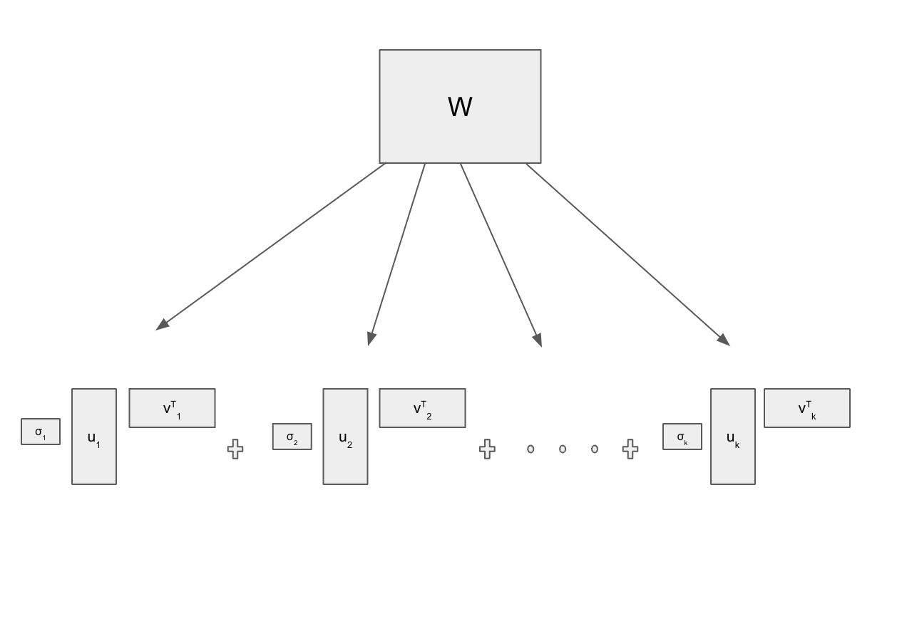
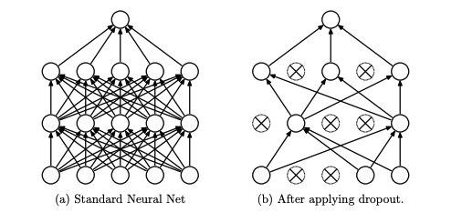

Introduction
A central problem in deep learning is that of regularization. Vanilla models often are overfit to the training data, and regularization is added to the system in order to improve generalization. Broadly, this is done on the data-side (e.g. augmentation), in model structure (layer norm or dropout), and/or in the loss function itself (norm regularization). There are many arguments for regularization in favoring these simpler models, but the question is always
simple in what sense? For example, L2 regularization promotes small solutions, but L1 norm regularization is better for when sparsity is needed. Modern data science practitioners must be able to identify when and where to apply different regularization techniques. Here we perform regularization from a
spectral perspective and introduce a new technique we call
spectral dropout.
What's the Spectral Perspective?
Take a standard multi-layer perceptron (MLP) model. This consists of many linear layers intertwined with pointwise non-linearities. Since the input and output to any particular layer can be represented as vectors, we can represent the layer’s mapping from inputs to outputs as a weight matrix
. It turns out that penalizing the complexity of these layer matrices can help prevent overfitting in neural nets.
How does one measure the size or complexity of a matrix? Any matrix can be simplified to a scaled sum of smaller rank-one matrices via its
singular value decomposition (SVD). This decomposition produces bases that span its column space as well as feature space, and correpsonding importances of these singular vectors. The SVD is essential for data compression and dimensionality reduction, hence why it naturally lends itself to regularization in deep learning. It's been deployed in several data science applications like recommender systems, latent semantic analysis, and noise filtering
[0]. So in an arbitrary matrix of rank
we have the following SVD:

Figure 2: The Singular Value Decomposition.
A common measure of complexity for a matrix is its spectral norm, which is largest of its singular values
. Yoshida et al.
[1] showed that penalizing the size of weight matrices via the spectral norm improved generalization of deep learning models. Moreover, they generated adversarial inputs that were perturbed only slightly in spectral norm, which upon training with this augmented data again reduced overfitting. In this blog we also regularize from a spectral perspective, where we aim to limit the complexity of spectral decompositions.
Dropout
Dropout is a regularization technique introduced by Srivastava et al.
[2] to prevent overfitting in neural networks. The method works by randomly setting a fraction of the neurons' activations to zero during each forward pass in training. This stochastic behavior forces the network to learn robust features that generalize well to unseen data. If there's always some chance of a neuron being set to zero, the model learns to distribute information across neurons within the layer. Formally, given an intermediate layer's activation vector, dropout applies a binary mask sampled from a Bernoulli distribution to zero out units randomly. During inference, all neurons are used, and their outputs are scaled to match the expected training behavior.

Figure 3: Dropout in a neural network. Neurons are stochastically deactivated during training. Borrowed figure from [2].
Here we employ dropout within the spectral perspective. Instead of randomly dropping out neurons, we stochastically drop out the spectral components in deep models.